Carta Natal
Una lectura para volver a ti una y otra vez.
{% set palabras_nombre = metadata.nombre.split(" ") %}
{% set mitad = (palabras_nombre|length / 2)|round(0, 'ceil')|int %}
{{ palabras_nombre[:mitad]|join(" ") }}
{{ palabras_nombre[mitad:]|join(" ") }}
{% if interpretacion.carta_en_una_mirada %}
Tu carta en una mirada
{{ interpretacion.carta_en_una_mirada.esencia }}
Tus mayores talentos
{% for talento in interpretacion.carta_en_una_mirada.talentos %}
- {{ talento }}
{% endfor %}
Tus mayores desafíos
{% for desafio in interpretacion.carta_en_una_mirada.desafios %}
- {{ desafio }}
{% endfor %}
Tu misión
{{ interpretacion.carta_en_una_mirada.mision }}
{% endif %}
Cómo leer este reporte
Este no es un documento para terminar en una sola tarde.
Una carta natal revela diferentes significados según el momento de la vida en el que
te encuentres. Es posible que algunas páginas resuenen profundamente hoy y que otras cobren sentido meses o
incluso años después.
Te invito a leer este reporte con curiosidad, no buscando respuestas absolutas, sino
nuevas formas de comprenderte. Mientras lo recorres, recuerda:
- No es necesario leerlo todo en una sola sesión.
- Vuelve a él cuando estés viviendo cambios, decisiones importantes o momentos de crecimiento.
- Subraya las frases que más resuenen contigo y anota tus propias reflexiones.
- Si alguna interpretación no encaja hoy, déjala reposar. Con el tiempo podrías descubrir un significado
diferente.
Este reporte no pretende decirte quién eres, sino ofrecerte un mapa simbólico para
explorar tu propio camino. Que estas páginas te acompañen con la misma paciencia con la que el cielo ha
acompañado tu historia desde el día en que naciste.
"La carta natal no cambia. Quien cambia eres tú. Por eso, cada nueva lectura puede revelar una perspectiva
diferente."
{% if interpretacion.overview %}
Capítulo I
Visión General
{{ interpretacion.overview }}
{% endif %}
{% if elementos_y_modalidades or dignidades %}
Capítulo II
Elementos y Dignidades
{% if elementos_y_modalidades %}
Elementos
{% for elemento, cantidad in elementos_y_modalidades.conteo_elementos.items() %}
{{ elemento }}
{{ cantidad }}
{% endfor %}
Dominante: {{ elementos_y_modalidades.elemento_dominante }}
Modalidades
{% for modalidad, cantidad in elementos_y_modalidades.conteo_modalidades.items() %}
{{ modalidad }}
{{ cantidad }}
{% endfor %}
Dominante: {{ elementos_y_modalidades.modalidad_dominante }}
{% endif %}
{% if dignidades %}
Dignidades Esenciales
| Planeta | Signo | Dignidad |
|---|
{% for nombre, info in dignidades.items() %}
| {{ nombre }} |
{{ info.signo }} |
{{ info.dignidad }} |
{% endfor %}
{% endif %}
{% if interpretacion.lectura_elementos_dignidades %}
Lectura del Patrón
{{ interpretacion.lectura_elementos_dignidades }}
{% endif %}
{% endif %}
Capítulo III
Puntos Angulares
| Punto | Signo | Grado |
|---|
{% for nombre, datos in puntos_angulares.items() %}
| {{ nombre }} |
{{ datos.signo }} |
{{ "%.2f"|format(datos.grado_en_signo) }}° |
{% endfor %}
{% if interpretacion.ascendente %}
Asc
Ascendente
{{ interpretacion.ascendente }}
{% endif %}
{% if interpretacion.medio_cielo %}
MC
Medio Cielo
{{ interpretacion.medio_cielo }}
{% endif %}
Capítulo IV
Planetas
{% set simbolos = {
"Sol": "☉", "Luna": "☽", "Mercurio": "☿", "Venus": "♀", "Marte": "♂",
"Jupiter": "♃", "Saturno": "♄", "Urano": "♅", "Neptuno": "♆", "Pluton": "♇",
"NodoNorte": "☊", "Quiron": "⚷"
} %}
{% for nombre, datos in planetas.items() %}
{{ simbolos.get(nombre, "•") }}
{{ nombre }}
{{ datos.signo }} {{ "%.2f"|format(datos.grado_en_signo) }}° · Casa {{ datos.casa }}
{% if datos.retrogrado %}· Retrógrado{% endif %}
{% if datos.interpretacion %}
{{ datos.interpretacion }}
{% endif %}
{% endfor %}
{% if aspectos %}
Capítulo V
Aspectos
| Punto A | Aspecto | Punto B | Orbe |
|---|
{% for asp in aspectos %}
| {{ asp.punto_a }} |
{{ asp.aspecto }} |
{{ asp.punto_b }} |
{{ asp.orbe_usado }}° |
{% endfor %}
{% endif %}
Capítulo VI
Casas
| Casa | Signo | Grado |
|---|
{% for numero, datos in casas.items() %}
| {{ numero }} |
{{ datos.signo }} |
{{ "%.2f"|format(datos.grado_en_signo) }}° |
{% endfor %}
{% if interpretacion.conclusion %}
Capítulo VII
Conclusión
{{ interpretacion.conclusion }}
Esta interpretación fue generada con asistencia de inteligencia artificial como guía simbólica
de autoconocimiento. No constituye consejo profesional, médico, legal ni financiero.
Para decisiones importantes de vida, consulta siempre con un profesional cualificado.
{% endif %}
{% if interpretacion.frase_de_cierre %}
{{ interpretacion.frase_de_cierre }}
{% endif %}